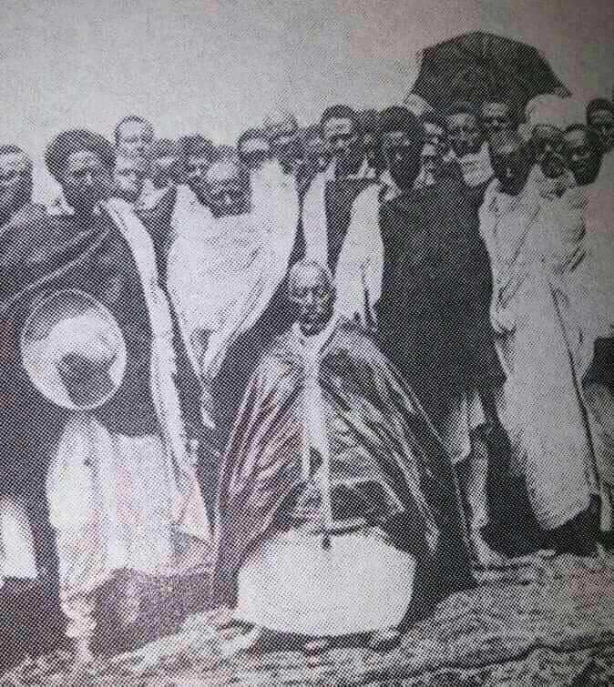

Nekemte like most of the towns of the Wollega Province grew as a result of the rise of agricultural surplus after the Oromo became permanently settled in the early in the late 16th-century. Its rise was also closely connected with the rise of the Oromo institution of gada, a system where every 8 years leadership in the community was transferred to a new age class of leaders.
Nekemte was formerly overshadowed by nearby Leka and Bilo, the former regional markets. Nekemte acquired some importance when Bekere Godana in 1841 extended his rule of Nekemte over more area to form a new polity. and later his son Moroda Bekere made it the capital of their kingdom of Welega in the mid-19th century.The one you see below in the picture is Kumsa Moroda.
By 1935 Nekemte had become the most important town in Wollega. There were nearly 70 foreign residents before the Italian occupation, mostly merchants and missionaries. 23 importers-exporters had agencies there, most of whom were Indians, but these also included two Greeks, a Lebanese, and an Armenian. The British explorer Dunlop, who spent four days of the same year in that town, noted that its central location on the main trade route between Addis Ababa the Anglo-Sudan led to it, having developed enormously during the preceding few years, as the new school, warehouses, stores, and hospital testified.
A public address system was installed in the central square in Nekemte (and in ten other towns) in 1955, used for receiving transmission from Radio Addis Ababa and re-broadcasting it. In 1957 Haile Sellasie I School was opened, one of nine provincial secondary schools in Ethiopia and outside Eritrea. At that time Nekemte was still the end point of the telephone line westward.